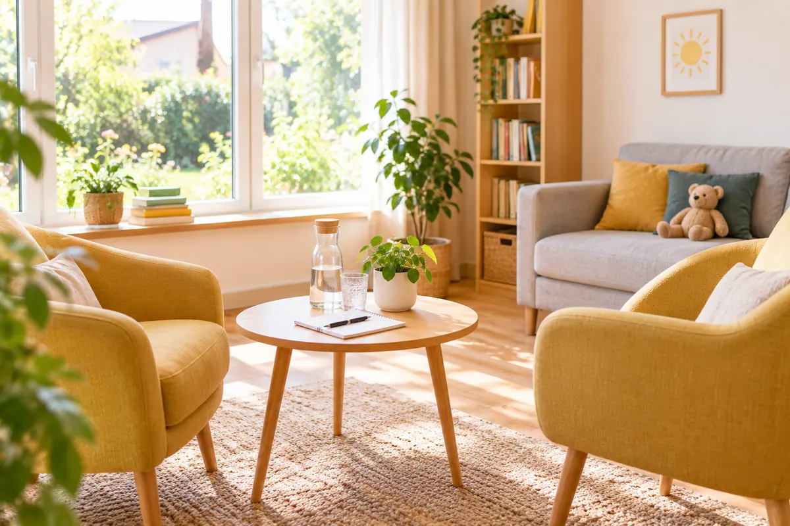

Verlässliche Partner für die Hilfeplanung.
Just Kids with Dreams bietet stationäre Hilfen nach § 34 SGB VIII in kleinen Wohngruppen. Hier finden Sie unser Konzept kompakt und den direkten Kontakt.

SymbolbildUnser Angebot kompakt
Hilfeform
Heimerziehung und sonstige betreute Wohnform nach § 34 SGB VIII in kleinen, familienähnlichen Gruppen.
Zielgruppe
Kinder und Jugendliche, die nicht in ihrer Familie leben können. Details zu Alter und Platzzahl teilen wir Ihnen gern im Gespräch mit.
Start
Die erste Wohngruppe in Dortmund ist für 2027 geplant. Die Aufnahme erfolgt nach Erteilung der Betriebserlaubnis nach § 45 SGB VIII.
Kinderschutz und Qualität
Kinderschutz ist für uns nicht verhandelbar und fest in Konzept und Alltag verankert.
- Schutzkonzept mit Verfahren nach § 8a SGB VIII
- Erweiterte Führungszeugnisse für alle Mitarbeitenden nach § 72a SGB VIII
- Beteiligungs- und Beschwerdeverfahren für Kinder und Jugendliche
- Enge Zusammenarbeit in der Hilfeplanung nach § 36 SGB VIII
- Qualitätsmanagement mit externer fachlicher Begleitung
- Mitgliedschaft im Paritätischen NRW
Lieber direkt sprechen?
Vereinbaren Sie einen 30-minütigen Zoom-Termin. Wir stellen Ihnen unser Konzept vor und beantworten Ihre Fragen.
Konzept anfordern oder Gespräch vereinbaren
Wir melden uns innerhalb von zwei Werktagen bei Ihnen.